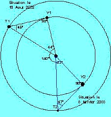
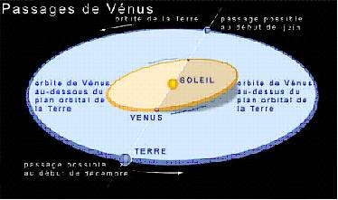

Découvrir la planète VENUS en vue du 8 JUIN 2004
I – Un peu de mythologie
Par son éclat incomparable, Vénus représente la déesse de la beauté et de l’amour dans les diverses civilisations du bassin méditerranéen. De la Mésopotamie à Rome en passant par la Grèce, la déesse de la fécondité se nomme tour à tour, Ishtar, Aphrodite puis Vénus en connaissant d’innombrables aventures amoureuses, au gré des cultures. En Amérique centrale, le calendrier rituel des Mayas se réfère aux révolutions de Vénus.
II - Un monde très particulier
‘L’étoile des bergers’ des anciens, n’est autre que le troisième astre dans l’ordre des éclats après le Soleil et la Lune. Au même titre que Mercure, Vénus est une planète inférieure : son orbite est à l’intérieur de celle de la Terre.

© IUFM Paris
Ainsi on ne peut les voir que le soir ou le matin, mais jamais au milieu de la nuit.
Les occasions d’observer Vénus sont considérablement plus grandes que pour Mercure, car elle s’écarte davantage du Soleil :
( exemple, 46° et 47°pour des élongations de 2002 et 2003 contre 28°pour Mercure ).
Comme la Lune, les planètes Mercure et Vénus présentent des phases, mais avec des diamètres apparents qui varient fortement.
Sa trajectoire, quasi circulaire en fait la planète avec la plus petite excentricité.
Le plan de son orbite est relativement incliné par rapport à celui de la Terre : ( 3,4°).

© Vénus transit 2004 IMCCE
C’est la planète dont la distance à la Terre peut devenir la plus faible.
Cela se produit lors des conjonctions inférieures. Cette situation revient tous les 584 jours.
C’est à ce moment que le diamètre apparent de l’astre est le plus grand et juste suffisant pour être perçu par un œil correctement
protégé si on regarde la planète défiler devant le Soleil ; ce sera le cas du 8 juin prochain…
A peine plus petite que la Terre, la deuxième planète accomplit une révolution autour du Soleil,
en 225 de nos jours. La rotation de la planète sur elle même se fait très lentement en 243 jours terrestres mais dans le sens rétrograde,
par rapport à celui de sa révolution. Ainsi, le Soleil se lève à l’Ouest pour se coucher à l’Est. La combinaison de ces deux données, fait que le jour sur Vénus dure 117 jours pour être précis.
C’est l’intervalle de temps qui sépare deux midis consécutifs.
Vénus se cache sous une atmosphère très dense de dioxyde de carbone.
Un effet de serre considérable en fait une planète inhospitalière.
Au sol la pression vaut 90 à 92 fois la pression atmosphérique.
De jour comme de nuit, la température frôle les 470°C ;
il n’y a donc pas les écarts importants que l’on trouve sur Mercure,
la Lune ou Mars. Le sol est désespérément sec. Durant la journée,
la luminosité ambiante est celle d’un ciel d’orage sur Terre.
La haute atmosphère connaît des tourbillons puissants ( 360 km/h),
qui transportent des gouttelettes d’acide sulfurique qui se décompose avant d’arriver au sol.
Les basses couches de l’atmosphère tournent, lentement, en bloc avec la planète.
III – Quelques valeurs propres au 8 juin 2004
Distance Soleil, Terre : 151, 8 millions de km - Distance Soleil , Vénus 108,6millions de km - Distance Terre,
Vénus: 43,2 millions de km – Rayon de Vénus : 6051,8km.
Il est alors facile de calculer le diamètre apparent voisin de 57,8’’ d’arc et proche du seuil de l’acuité visuelle,
d’un œil dit normal.
Ce 7 juin, la planète coupe le plan de l’orbite terrestre ou plan de l’écliptique au nœud descendant à 14 h 48 TU.
La conjonction inférieure a lieu le 8 juin à 8 h 43 TU ; elle s’accompagne du passage de la planète devant notre étoile.
Rappels : 1 U.A. = 149 597 870,691 km ( D’après les dernières données )
Diamètre du Soleil: 1 391 740 km - rayon moyen de la Terre : 6 371 km
IV – Bibliographie
Vénus devant le soleil – Vuibert/Adapt – livre coordonné par A . Simaan
Le passage de Vénus – du même auteur - bulletin de l’APISP de sept. 2003
Les Cahiers Clairaut du CLEA , numéro 105, printemps 2004